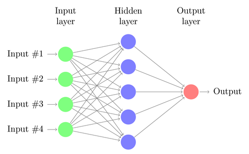

What is it?
Deep neural networks are easily fooled

Based on original article Nguyen A, Yosinski J, Clune J. Deep Neural Networks are Easily Fooled: High Confidence Predictions for Unrecognizable Images. In Computer Vision and Pattern Recognition (CVPR ’15), IEEE, 2015.
Sergey Volodin, group 374
Plan
- Neural Network
- Deep Neural Network
- Fooling DNN
Neural Network
- Inputs and outputs
- Information processing
- Training

Image source: www.texample.net
Deep Neural Network
- Has a lot of hidden layers
- Used for images recognition
Classification by www.clarifai.com, cat from wikipedia.org
Fooling DNNs
Do they see like we do?No, they don't
Image source: original article
Fooling DNNs
- Showing image
- Getting score
- Changing image
Image source: original article
Summary
- Neural network
- Deep neural network
- Fooling a DNN